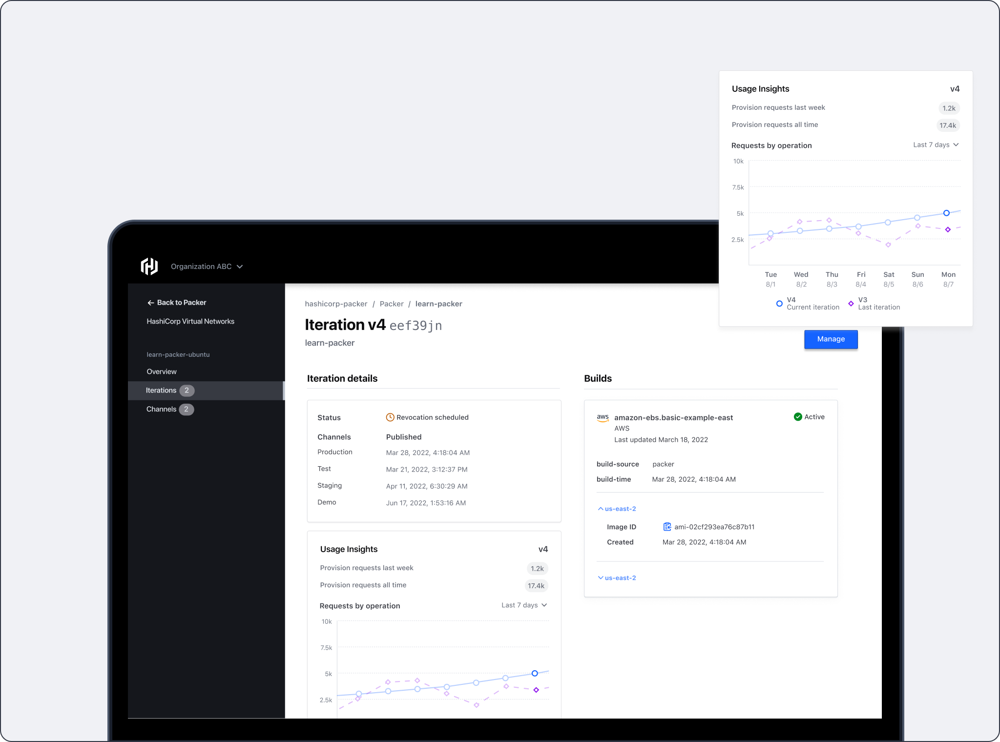
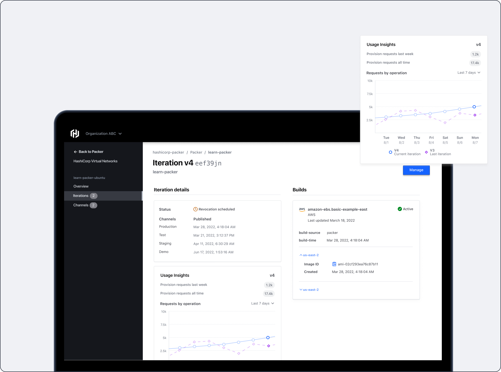
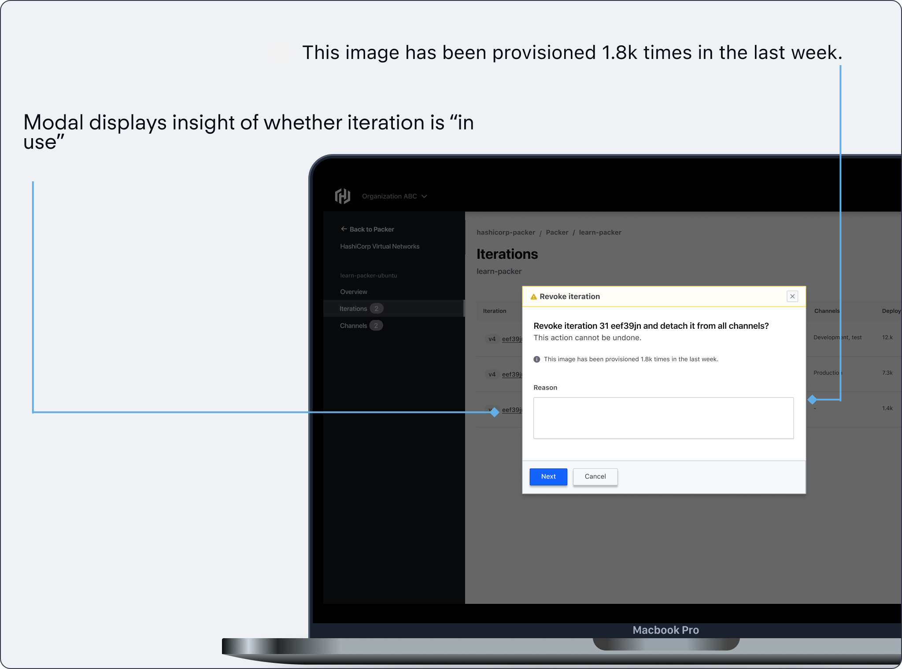
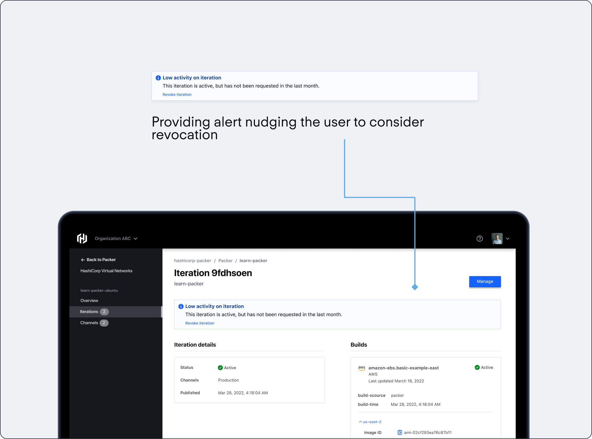
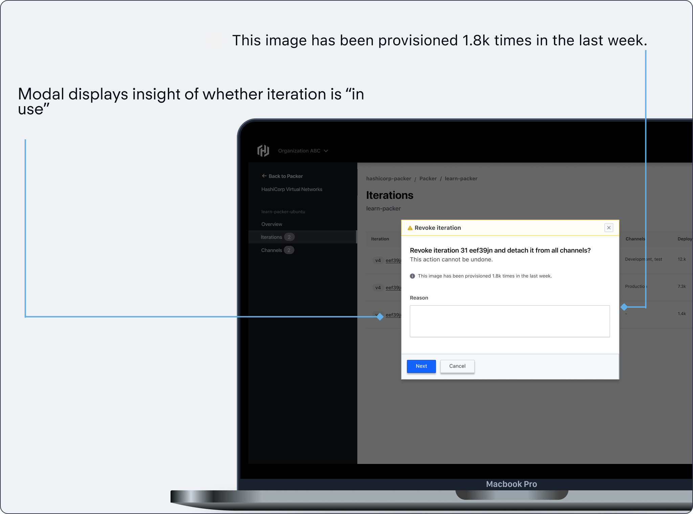
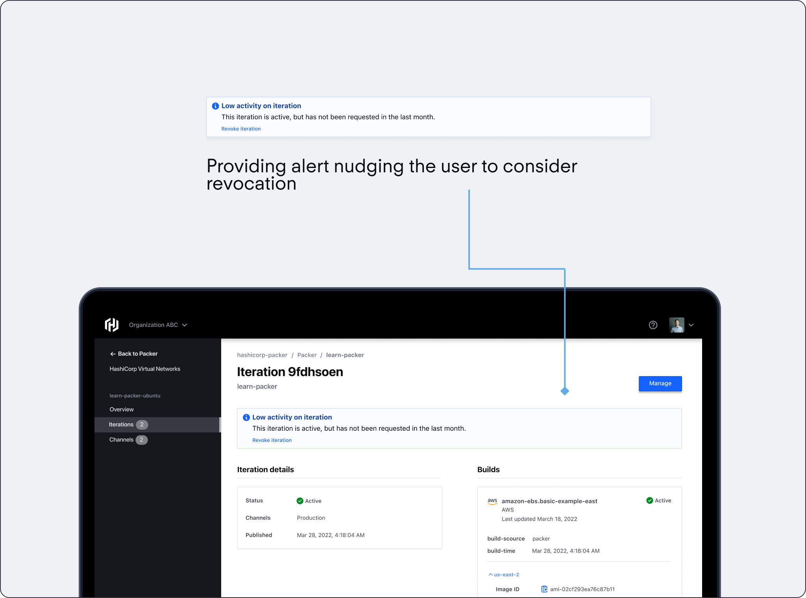

Ishaan Bose
Ishaan Bose
HashiCorp is a unicorn DevOps company that specializes in world class infrastructure products. They are the industry standard in Infrastructure as Code (IaC), and have produced many key products such as Terraform, Vault and Consul.
In 2022 interned on HashiCorp Packer, which is a tool used by software developers and IT professionals to create identical machine images or "packs" for different platforms, such as virtual machines, containers, or cloud instances. These images include the necessary software, configurations, and settings, ensuring consistency and reducing the potential for errors during deployment.
When: Summer 2022
Role: Sole Product Designer
Tools: Figma, Qualtrics
Practioners need image usage data to inform their machine image lifecycle management at scale. Currently, Packer does not have an easy way to extract this data. We want to provide information contextually to inform the practitioner and aid them in their decision making process.
What we identified was a key gap in how users are making decisions, which is the lack of information. This leads to a lack of understanding of what to do in certain situations.

Unfortunately, what we lacked was the understanding of which metrics specifically that a user needed. Which necessitated research to fill in this gap.
Our team had a quick timeline, and needed a rapid research method that could quickly get over a critical sample size which we determined to be roughly over N=50, considering our user base. To meet this, we decided to take advantage of HashiCorp’s rich open source community, and use Reddit to source participants.

Sample Size
Views
Metrics Found

To better understand which metrics actually fit together, I card sorted using subject matter experts, and then sent that to internal users of our products to validate whether the language was correct.
One hard part of designing a technical product is the fact that it is hard to understand the problem space as well as speak in terms that the end-user would understand, so this was extremely helpful.

Net new iterations
Registry usage
Forced iteration
I ideated through low fidelity wireframes, where I iterated rapidly and sought feedback from our design team. I looked for ideas surrounding context of delivery, and high level user needs.

In an essence, we needed to deliver insights in contextually to make sure that the user is aided in their decision making process. To do this, I delivered the information in 3 levels.
Lets step through what a solution looks like:
 

 



A little motion to illustrate the point
Net new iterations
Registry usage
Forced iteration
Working here was definitely one of the top experiences of my career to this date. I really enjoyed getting to tackle an extremely complex problem space, especially when juxtaposed with my former experience at a marketing tech company. Here is some of my other key takeaways


If I had more time, I would probably want to consider adding additional granularity to results, and validating this solution with testing